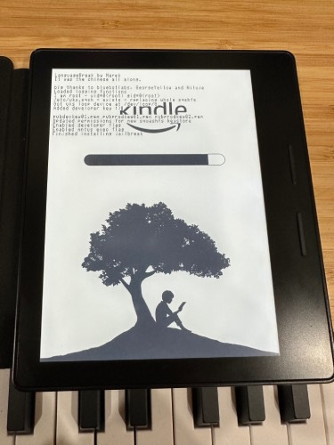
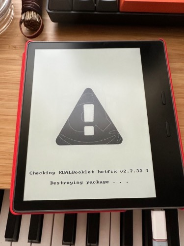

2024-06-01

킨들 탈옥하는건 코리더 설치하기 위해서인데
킨들이 한번씩 자동으로 업데이트되면 풀리는 경우가있어서
다시 하려고하면 항상 잊어먹고 기억이 안나서 메모한다.
솔직히 다른 이북리더로 봐도 상관없는데, 재미로 하는거다이런건...
1. 일단 탈옥을 한다. 내거 오아이스 아무생각없이 미국스토어->일본스토어로 바꾸고 탈옥풀렸길래 검색해보다 안건데
최근에 최신업데이트 버전까지 간단하게 되는방법이 나온것 같다 하고싶은사람은 얼른하도록.
Kindle Jailbreak
LanguageBreak
Jailbreak for any kindle running FW 5.16.2.1.1 or LOWER
어떤 방법으로든 탈옥을 했으면 KUAL, 이라는 앱런쳐를 설치한다.
KUAL
처음엔 일단 MR Package Installer 를 받아서 킨들에 복사한후 그중 mrpackages에
KUAL업데이트 파일을 넣은후에 ;log mrpi를 킨들 검색창에 입력한다.
KUAL설치후에는 위 폴더에 업데이트 파일을넣고 메뉴에서 선택해서 업데이트해도됨
Tools Snapshots of NiLuJe's hacks
필요한건 여기다있음
koreader
끄읕
한번씩 핫픽스 깔아주고 그러거나 하면 좋다.
